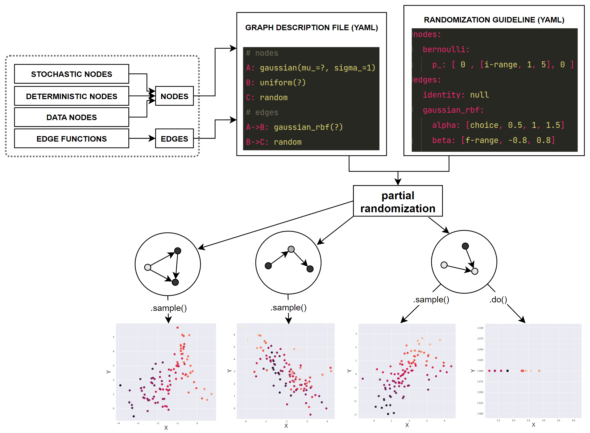

Theoretical background
The underlying causal mechanism of a data distribution can be specified using causal Directed Acyclic Graphs (DAGs). A causal DAG includes nodes which represent variables, and directed edges which represent a causal flow from the parent to child nodes. A data distribution \((X_1, \dots, X_D)\) is factorized with respect to a causal graph \(\mathcal{G}\) as
Eq. (1) has two implications:
Each node is a function of its parents in the associating causal DAG.
In order to sample from the full data distribution, we can start with sampling the source nodes (nodes without parents), then sampling their child nodes, and continuing the process according to the topological ordering of the graph, until all nodes are sampled.
Simulation in PARCS follows this formulation, and in addition to that, 4 more design ideas:
Each node is identified by a specific univariate distribution \(\mathcal{P}\) which is parameterized by \(\Theta = (\theta_1, \dots, \theta_K)\). For instance, \(\mathcal{P}\) can be the Gaussian normal distribution \(\mathcal{N}(\Theta)\), parameterized by \(\Theta = (\theta_1=\mu, \theta_2=\sigma)\). Consequently, to sample a node means to sample from its distribution.
Distribution parameters are functions of the parents of the node, i.e. \(\Theta = \Theta\big(\text{PA(X_i)}\big)\). Continuing the above example, if a node \(X_3\) with an associating Gaussian normal distribution has two parents \(X_1\) and \(X_2\), then \(\mu = \mu(X_1, X_2)\) and \(\sigma = \sigma(X_1, X_2)\).
In PARCS, the functions of distribution parameters are limited to bias, linear and interaction terms. Interactions are defined as multiplication of all parents pairs. In our example, the mean of the Gaussian normal, can be \(X_1 -2.5X_2 + 0.7X_1X_2 + 1\), but not \(X_1 - 2X_1X_2^3\). Therefore, assuming a variables dictionary which includes bias, linear, and all interaction terms, each parameter equation can be defined as the dot product of a coefficient vector and the variables dictionary. Subsequently, each distribution parameter has a unique coefficient vector.
The causal flow of edges can be subjected to a deterministic transformation, meaning that instead of the parent variables, functions of the parent variables are inputs of distribution parameters. In our example, it is possible that \(\mu = X_1 + g(X_2)\) where \(g(.)\) is an arbitrary transformation (which we call edge function). These functions are placed on edges, are applied to individual parents, and thus are parent-child specific.
In summary, to fully declare a graph, the causal DAG structure alongside all the mentioned functions and parameters must be determined. However, you can partially declare a graph and leave the remaining parameters to be randomized. This is done based on a randomization guideline that you provide as the user. For example, you can tell PARCS to randomly set the type of edge functions per each simulation iteration. The figure bellow depicts a schematic of the internal structure of PARCS simulation.
